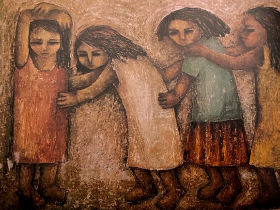

On Failure and Despair: What I did for love
Mada Masr, 5 February 2024
This essay an attempt to understand what thinking through failure and despair might mean for a generation that witnessed radical political change, including a revolution and its savage counter-revolutionary backlash, and a world order rapidly running toward its own demise and the possibility of love as resistance